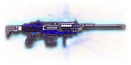

← Back to the GD Guardian comparison
Sage Guide · New Conglomerate · Battle Rifle · Directive
The New Conglomerate's directive battle rifle: the Warden with everything already bought — a compensator, a forward grip and high-velocity ammunition built in, 680 m/s, and damage that holds to 95 m. Earned, not bought.
Read this first — this gun is NOT a starter, and you cannot buy it. The GD Guardian is unlocked by completing the Master Scout Rifles directive — five scout rifles auraxiumed. It costs no certs and no Daybreak Cash, because it is earned, not bought. Don't buy the Forward Grip (100): you already have it built in.
The one-line verdict: a 250-damage semi-automatic that kills in two headshots inside 15 m and four chest shots — with the compensator, the forward grip and the high-velocity ammunition already fitted. The 0.00° aimed cone is the whole gun, and the 680 m/s velocity means you hold less than anyone else.

The GD Guardian · New Conglomerate · Directive reward · 20-round magazine
Every section below folds shut — tap a heading to open it. Section 01 starts open, because it's the damage model that defines this gun.
Every enemy infantry has 1,000 health (500 shield + 500 health). Your bullet does 250 damage up close, fading to 225 at long range — GD Guardian damage. Headshots count ×2, leg shots count less (×0.9). Against a shielded Heavy Assault (1,450 health with the shield up) the chest count rises — last column. A range like "4 → 5" means the count changes inside the band, as the damage slides.
| Range | Damage | Head | Chest | Legs | Chest vs shielded Heavy |
|---|---|---|---|---|---|
| Close · 0–15 m | 250 | 2 | 4 | 5 | 6 |
| Mid · 15–95 m | 250→225 | 2 → 3 | 4 → 5 | 5 | 6 → 7 |
| Far · 95 m+ | 225 | 3 | 5 | 5 | 7 |
Perfect-accuracy times: 2 headshots = 180 ms up close, 3 headshots = 360 ms at range; 4 chest shots = 540 ms up close, 5 chest shots = 720 ms at range. Against a shielded Heavy Assault (1,450 health with the shield up) it is 3 headshots up close and 4 at range, or 6 chest shots up close and 7 at range. In real fights you will land maybe half your rounds — still, this is why the head matters so much on this gun: two clean headshots end it in 180 ms, and no starter rifle does that.
Full power to 15 m, then a steady slide to minimum at 95 m. The dashed blue line is with Soft Point Ammunition: 250 → 225 (20–95 m) — see section 06 for what it costs.
One gun, four fighting styles. The right technique changes with distance — use the range finder below to see what your bullets do at any range, then learn the four bands underneath it.
How to fight hereAim down sights at the neck. Three headshots kill here — two only inside the full-damage range — take the shot only when the crosshair is still, and let the 2× multiplier do the work.
Aim: centre of the chest, from the hip. Keep moving.
Scoping in costs you time and slows you down — at arm's length that gets you killed. But be honest with yourself: this gun's hipfire is loose (3.5° standing, 4.0° moving), so keep it truly close, strafe side to side (A/D) while firing, and let your 250-damage bullets do in four hits what a starter needs seven for. 20 rounds is 5 kills if every round lands — make them count.
Aim: neck / upper head. One aimed shot, then reset.
This is where the gun earns its keep: near-full 250 damage, a 0.00° starting cone, and fast bullets. Two headshots kill inside the full-damage range, three just past it — 0.54 s for four chest shots inside it, 0.72 s for five past it. Start your crosshair at the neck — the first-shot kick climbs hard, so do not plan a second shot from the same aim point. Your home range: close enough to reach your squad, far enough that the enemy's hipfire can't touch you.
Aim: head, holding a touch high. One aimed shot, then reset.
Damage is sliding toward 225 — the head already takes three past the full-damage range, and the chest five. Hold a little high — the bullet drops about 0.1 m by 100 m. Take these shots at stationary or slow targets — medics reviving, engineers on turrets.
Aim: head. Aimed shots, with a real pause between them.
Three headshots, 0.36 s apart — or five chest shots in 0.72 s. That is still faster than any bolt-action's second shot, so you win the follow-up race if the first shot landed. But your magazine is 20 rounds: 5 kills if every round lands, then a 2.0 s reload. Do not take this shot at a moving target unless you are sure of the first hit.
Your accuracy is decided by two things before skill even enters it: what your body is doing (your stance sets the starting cone of fire) and what your finger is doing (how you work the trigger). The GD Guardian is a semi-automatic battle rifle, so the whole gun is built around one idea: every shot is aimed, and the cone only grows when you stop aiming. On a semi-automatic there is no fire selector to save you — your finger is the fire selector.
| Stance | Starting cone | What it means for you |
|---|---|---|
| Sprinting | 7.0° | The widest cone in the game. Never start firing from a sprint — see section 01. |
| Hipfire, moving | 4.0° | Walking or strafing from the hip. Fine inside ~8 m, leaks rounds past the target beyond it. |
| Hipfire, standing | 3.5° | Your point-blank default. The ring at 8 m in section 05 is this stance drawn out — workable, but every automatic hipfires tighter than you do. |
| Hipfire, crouched | 3.0° | The tightest hipfire you have. Crouch when holding a doorway from the hip. |
| Aimed (ADS), feet planted | 0.00° | Standing or crouched still makes no difference here — a perfect point, not a cone at all, until the first shot's bloom. This is why section 01's order matters. |
| Aimed (ADS), strafing | 0.15° | That is the moving floor — the cone you start from while strafing aimed, before bloom adds 0.1° per shot. One aimed shot from a standstill stays tighter than strafing. You move at 0.5× speed while aiming, so strafe between shots to break their aim, not during them. |
| Mode | How your finger does it | Use it at |
|---|---|---|
| One aimed shot — the default | Click once, release, let the cone reset, click again | Almost everything, 10–100 m. Each shot starts at 0.00° and the bloom (0.1° per shot) only matters if you fire again before resetting. One clean shot is the whole gun. |
| Two quick shots | Click twice, as fast as the 180 ms refire allows | When the kill needs a follow-up and the first one landed — a second headshot past the falloff, or a second chest shot on a shielded Heavy. The second shot leaves a 0.1° cone, so re-aim, don't just click. |
| Spam clicking — the mistake | Clicking as fast as your finger allows, shot after shot | Nowhere. Every shot adds 0.1° of bloom and the vertical kick climbs your aim off the target. A 20-round magazine of spray is an empty magazine and a dead rifleman. |
A target 40 m away, aiming down sights. Press and hold FIRE (mouse, touch, or hold Space with the button focused) and the practice window fires at the fastest pace this gun allows — one round per click in the real game, 180 ms apart — and watch the holes walk wider the longer you hold. Release, let the cone reset, fire again. One aimed shot is perfect discipline here. This practice window is shared by the whole Sage series: it is driven by a weapon profile plugged into the window — here the GD Guardian's (333 RPM, 0.00° starting cone, 0.1° bloom per shot, target at 40 m) — and the spread is drawn at true scale from those numbers. Note the cone grows from the very first shot: there is no free window where the bullets stay perfectly grouped.
Cone of fire — fills as you hold, empties when you release.
Your shot strings will be graded here — one aimed shot is perfect discipline.
Some things are easier to show than to say. Here's what your bullets actually do: how wide hipfire spreads at 8 metres, what a good shot rhythm looks like, and what the scopes really change. The hands-on version — firing the shots yourself — is the practice window in section 04.
A full-size target 8 m away — an arm's-length room fight. The rings show where hipfire rounds land around your aim point (the chest). Sizes are drawn to scale from the gun's real cone-of-fire numbers.
Read it this way: standing still, the 0.49 m ring sits inside the chest — most rounds hit a target this size, which is why hipfire works point-blank. But move and it grows to 0.56 m — wider than the torso — so the edge rounds start leaking past him, and the rings only grow with distance while the man doesn't. Crouching tightens the ring to about 0.42 m (3.0°). Past ~10 m that's rounds missing entirely: the exact moment to switch to aiming down sights, where the spread shrinks to a dot. (Ring sizes use the real geometry: spread diameter = 2 × distance × tan(cone ÷ 2).)
Every shot widens your cone of fire ("bloom"). Releasing the trigger for a heartbeat resets it. Same 4 shots, two very different outcomes:
The target pattern is one aimed shot, a pause, and one more aimed shot — that is the ideal. Past that, the bloom (0.1° per shot aimed) keeps growing with every shot from the very first one, so the extra bullets mostly decorate the wall behind your enemy instead of hitting him. Short strings also leave you rounds for the second enemy — remember, the magazine is only 20, and a 4-shot spam is a fifth of it gone.
At 60 m through the 1x reflex, the target is big enough to place a headshot — and you still see the ground around him. Fast to aim, nothing blocks your edges. Scope-in is 0.15 s.
Same target, same 60 m — but through the 3.4x scope he looks more than three times as tall, so placing shots on his head gets much easier. The price: your view narrows to the round window and the world outside the glass is gone. Best past 60 m.
That's the whole 30-cert decision from section 06 in one picture: TekLyte 1x for the fight you are in, LX Tacti-Eye 3.4x for the lane you are holding. Most veterans carry both and swap per base — 1x for indoors, 3.4x for open ground.
Attachments are small multipliers, not new guns. The only ones that really change how this gun behaves are the ones that affect your aim, your cone of fire and how long you can keep shooting. Prices are in certs where the wiki lists them.
A clean 1x magnification with a fast 0.15 s scope-in. Your close-range option.
Good: mid-range fights and base assaults, where the wider view keeps you aware of flanks.
Bad: the long lane past 100 m, where the target gets small and the head gets hard to place.
A 2x magnification with the same fast 0.15 s scope-in. The middle ground.
Good: the 20–80 m fight, where 1x feels small and 3.4x feels slow.
Bad: past 100 m, where you want real magnification.
The classic marksman magnification. Scope-in is 0.15 s and the target is big enough to place a headshot at 60 m.
Good: almost everything a battle rifle does — 30–100 m, where the headshot lives.
Bad: tight indoor rooms — the zoom makes close targets feel fast and huge.
A 4x magnification for the long lane. Scope-in is 0.15 s.
Good: the 60–150 m lane, picking off stationary targets.
Bad: any fight inside 40 m, where the 3.4x already covers you and the extra zoom only narrows your view.
The highest magnification on this gun. Scope-in is 0.15 s, and the sway is noticeable — hold your breath (Shift) for the shot.
Good: the 100 m+ lane, picking off stationary targets.
Bad: any fight inside 60 m, where the zoom only narrows your view and the sway costs you the shot.
Enemies glow against a dark view, and it sees through smoke.
Good: night fights and smoky doorways.
Bad: daytime and long range — its view is short-ranged and washes out in bright light.
Already fitted — the Guardian comes with a Compensator: vertical recoil −30%, hip CoF +15%, minimap +35 m. It is part of the gun, not a purchase.
Good: nothing to buy — the best barrel attachment for this gun is already on it.
Bad: stealth play — if you want to vanish from the minimap, swap it for the Suppressor (100) and accept the range cost.
Hides your muzzle flash without the suppressor's damage and velocity cost. You still appear on the minimap when you fire.
Good: night fights and dark corners, where the flash gives you away before the minimap does.
Bad: daylight open-field work, where the flash was never the problem.
You vanish from the minimap when firing and your shots are quiet. In exchange, damage starts dropping off 20 m sooner and bullets fly 15% slower — your two-headshot kill still holds to 15 m, but your damage reaches its floor sooner.
Good: flanking behind enemy lines, rooftop and tree work, solo play behind the front.
Bad: front-line fighting where everyone already knows where you are — you pay the range cost for stealth you don't need.
Already fitted — the Guardian comes with a Forward Grip: horizontal recoil −25% at the cost of 0.15 s equip time. It is part of the gun, not a purchase.
Good: nothing to buy — the grip that steadies your aim is already on it.
Bad: nothing — there is no downside to a fitted grip.
Reduces swap time by 30% and horizontal recoil by 20%, but increases vertical recoil by 20%. On a gun whose vertical kick is already the story, the faster swap is the real prize.
Good: getting the rifle out fast after a reload, and getting your sidearm out when the magazine runs dry.
Bad: if the extra vertical climb bothers you — the built-in Compensator already handles the vertical, so the two stack well.
A torch whose beam reveals cloaked infiltrators. Toggle it with the attachment key (X by default).
Good: hunting a stalker infiltrator camping your capture point — sweep corners with it.
Bad: as your everyday rail — it gives zero accuracy help, and the beam advertises your position.
Increases hipfire accuracy by 33% — your 3.5° standing cone becomes about 2.3°.
Good: the 0–10 m band, where hipfire is your only option and every centimetre of spread matters.
Bad: past 20 m, where you should be aiming down sights anyway.
Removes the weapon's ADS moving accuracy penalty, but you move 33% slower while aiming. Your aimed cone stays at 0.00° even while strafing.
Good: holding a lane while strafing — your shots stay pinpoint while you move.
Bad: aggressive play — the slower ADS strafe makes you an easier target if they spot you first.
The Guardian has no Extended Magazine to buy — the magazine is already 20 rounds, and the directive build spends its extras on the compensator, the grip and the ammunition. Do not go looking for it; it is not there.
Good: the Heavy Magazine (100) is the ammunition-slot attachment that adds rounds.
Bad: nothing — there is nothing to buy here.
Already fitted — the Guardian's 680 m/s velocity and 95 m falloff ARE the High Velocity Ammunition numbers, without the −2 m max-damage penalty a bought HVA would cost you. There is no HVA to buy.
Good: nothing to buy — the best ammunition for this gun is already in it.
Bad: nothing — there is no downside to fitted ammunition.
Converts 20% of each bullet's damage into a pulse that drains shield and ability energy — about a fifth of a standard shield per hit, on top of the 200 damage that still lands.
Good: duelling shielded Heavies and ability-reliant classes — the drain hits the overshield they are hiding behind.
Bad: raw damage races — you give up 50 damage a bullet for the drain, so the chest kill takes an extra shot.
Two more rounds per magazine (20 → 22) — a whole extra headshot kill before the reload, at the cost of 20% wider hipfire.
Good: almost always — two rounds is a whole extra kill on this gun, and the hipfire cost barely matters past 10 m.
Bad: hipfire duels — the wider cone is exactly what you don't want point-blank.
Increases maximum damage range by 5 m, but reduces projectile velocity by 10%. Your falloff becomes 250 before 20 m, 225 after 95 m.
Good: the 10–25 m fight, where five extra metres of full damage buys you a whole extra headshot kill.
Bad: long range — the slower bullets drop more and arrive later.
Four ready-made setups — pick one, buy the attachments, go fight. Nothing here needs more than the gun and the listed attachments.
0 certs attachments · Already earned
What the directive actually earns you. Genuinely usable — learn the gun on this before spending anything more. The 3.4x scope is your first 30 certs.
230 certs attachments · Recommended
The best value in this whole guide. Covers every fight from a doorway to the long lane — with the Heavy Magazine swapped in for the grip when you want 22 rounds instead of a faster swap.
230 certs attachments · Long lane
The quiet long-lane build: big glass, no minimap signature, pinpoint aim even while strafing. Hold the 50–100 m lane and let the targets come to you — three headshots each.
330 certs attachments · Close support
Built for the 10–30 m fight: low magnification, a tighter hipfire cone, and disruptor rounds that eat the shield off whatever you hit. Swap back to the All-Rounder outdoors.
The gun is fine — your habits decide the fights. Six things to do on every engagement, in order.
Headshots deal double damage: 2 kill inside the full-damage range versus 4 to the chest, and 3 past it versus 5. Don't aim at the head directly — aim at the neck and let the first-shot kick climb into the skull. It's the single biggest damage upgrade you own, and it's free. At 180 ms for two heads, no starter out-kills you inside the full-damage range.
Every shot widens your cone of fire by 0.1° aimed, from the very first shot. Firing again before it resets means the second bullet leaves a 0.1° cone. Click once, release, let it reset. With only 20 rounds, you can't afford to decorate the wall.
Reloading with even 1 bullet left takes 2.0 s; an empty gun takes 2.6 s. That extra time is more than half a second standing defenceless. After one kill, duck behind cover and reload. Treat the last round as your emergency reserve, not your working magazine.
Walk with your crosshair at head height, pointed where an enemy's head will appear — a doorway edge, a corner, stairs. Most beginners lose fights in the half-second spent dragging the crosshair onto target. And you move at 0.5× while aiming, same as everyone else — so peek, fire your one shot, and break line of sight instead of standing in the open.
Your damage, accuracy and bullet speed all shine at 10–50 m, and your two-headshot kill holds to the full-damage range while theirs fades. Sprint between cover, use buildings and rocks as stepping stones, and arrive at your range before opening fire. The player who chooses the range usually wins the duel — make it you. Never chase a fight into arm's length if you can help it: that's where the 750 RPM guns live.
20 rounds is 5 kills at perfect accuracy and two at real accuracy. When the magazine runs dry mid-fight you are defenceless for 2.0 s — longer than any duel lasts. Reload after every kill, reload behind cover, and never start a fight on a half-empty magazine.
Every gun has a price. Here's where the GD Guardian pays — and the habit that covers each hole.
20 rounds is 5 kills if every round lands, and two or three in a real fight. A sprayed pair of shots can leave you dry mid-fight.
Play around it: tap-fire discipline (habit 2) and early reloads (habit 3). Your 2.0 s short reload is fast — reloading often is the design, not a failure.
At 333 RPM there are 180 ms between your shots. Every miss costs you a full 180 ms of kill time, and two misses in a duel hand it to the enemy. Your damage per second is strong on paper, but only if the bullets land.
Play around it: aim first, then fire (section 01), and fire one aimed shot at a time. This gun forgives a bad position; it does not forgive bad aim.
Two headshots kill only while your damage is still 250 — inside the full-damage range. Step past it and the head takes three, the chest five, and your 180 ms kill becomes 360 ms. The falloff is a cliff, not a slope.
Play around it: fight inside the full-damage range when you can, and past it aim for the head anyway — three heads in 360 ms still beats most guns' chest TTK.
3.5° standing and 4.0° moving from the hip — workable point-blank, but the bloom is 0.2° per shot and the refire is slow. A hipfire duel under 10 m against a fast-firing rifle is a fight you're built to lose.
Play around it: keep your distance (habit 5), ADS even at 10 m, and if someone does close on you, backpedal while hipfiring rather than standing still.
It takes 950 ms to equip, and an empty reload is 2.6 s against a 2.0 s short reload. Swapping to your pistol mid-fight, or running the magazine dry, leaves you defenceless for the better part of a second.
Play around it: reload early and only in cover (habit 3), and decide which tool is in your hands before the fight starts, not during it.
Five scout rifles auraxiumed buys a lot of directive progress elsewhere. What you're earning is the reach with the extras baked in — a compensator, a forward grip and high-velocity ammunition you never have to buy — and only that.
Play around it: earn it for the package — the 680 m/s velocity and the 95 m falloff with nothing left to buy — and only after you actually enjoy scout rifles. If you mostly fight past 100 m, a sniper rifle is the better buy.
Five drills, all in the VR Training room — no certs, no enemies, no pressure. About 15 minutes a session; do one set, then go fight.
Aim at a wall 20 m away and empty a full magazine without touching the mouse. Watch the bullet pattern climb — that's your gun's fingerprint: a 25° angle with a rightward bias. Repeat, this time pulling against it, until the group stays fist-sized.
Walk the dummy range keeping your crosshair glued to neck height the whole time, snapping to each new target without dipping to the floor or sky. Slow and clean first; speed comes on its own. Two headshots is the whole gun inside the full-damage range — make the neck your default.
At 30–60 m, kill dummies with two headshots each inside the full-damage range and three past it, reloading after every 5th kill. If a dummy takes an extra head, you were past the falloff or you missed — slow down. Goal: 5 dummies, 20 rounds, no reload mid-kill. Count your magazine while you do it — 20 rounds is 5 kills, so every wild round is a quarter of a kill thrown away.
Stand behind a pillar 15–25 m from a dummy. Step out, stop, ADS, fire one shot, step back behind cover. Repeat until stop → aim → fire is one motion instead of three decisions. This is the rhythm that keeps a 0.5×-speed rifleman alive: you never stand in the open trading shots.
Fire exactly 4 rounds, step behind a pillar, reload, repeat. Train your hands to reload early and only in cover until it's automatic — in real fights you'll do it without thinking, which is the point. Remember: a short reload is 2.0 s and an empty one is 2.6 s, so the last round is your emergency reserve, not your working magazine.